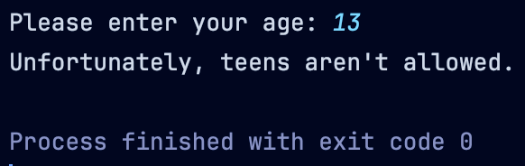
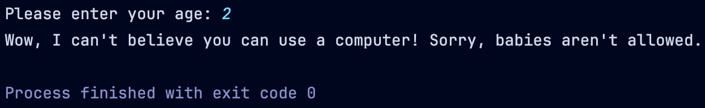
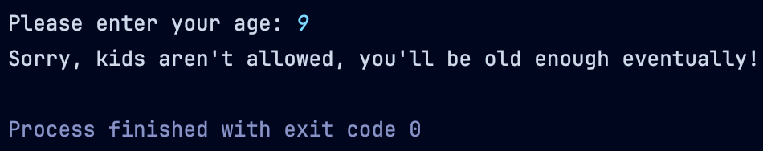
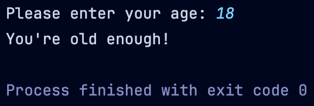

For this project, you’ll ask the user for their age, then you’ll tell them whether they pass an arbitrary age verification with different messages using a switch statement! You should be able to obviously change the minimum age, if necessary. The minimum age requirement for the examples was 18.
If the user enters an invalid age (e.g., not an integer,
etc.), you should inform them and ask for their age again. If they get
it wrong a second time, you should tell them to rerun the program to try
again, and you should end the main method.
Example output is shown below. Pay special attention to the ordering of your switch cases to make sure the output matches the examples! The following table lists the different age ranges for the project. You should have a unique message for each age range if the user’s age doesn’t meet the minimum age, but it’s not important what the messages are as long as they reflect specific age ranges.
| Designation | Age Range |
|---|---|
| Baby | 0 – 2 |
| Toddler | 3 – 5 |
| Kid | 6 – 10 |
| Tween | 11 – 12 |
| Teenager | 13 – 17 |
| Adult | 18 and up |
 Example output 1
 Example output 2
 Example output 3
 Example output 4